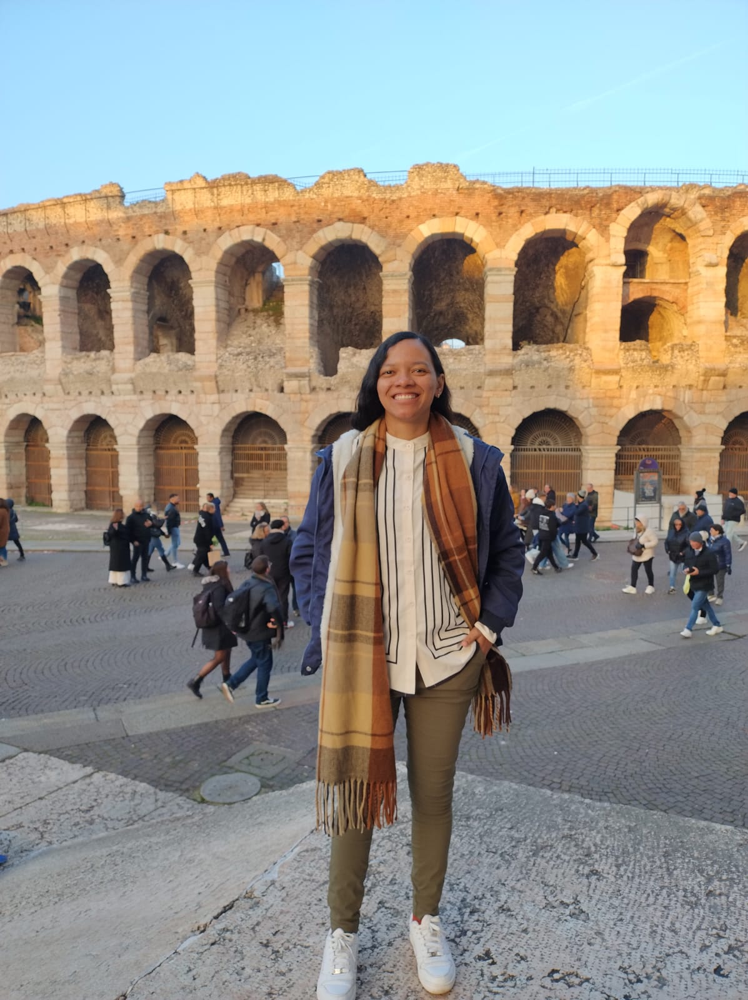

Professora na Universidade Federal de Mato Grosso do Sul (UFMS). Linha de pesquisa: geotecnologias, mensuração e manejo florestal.
Estrutura de florestas plantadas por escaneamento a laser terrestre (TLS).
Dados GEDI aplicados ao monitoramento de unidades de conservação no Pantanal.